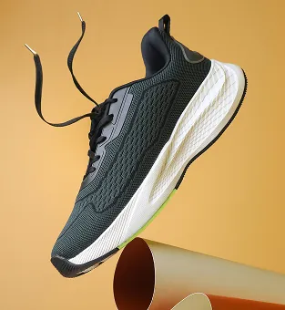
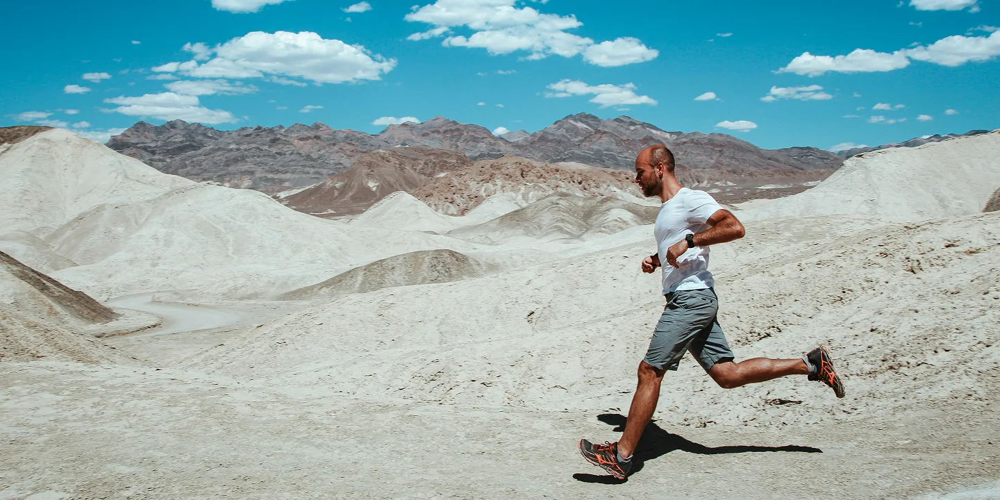
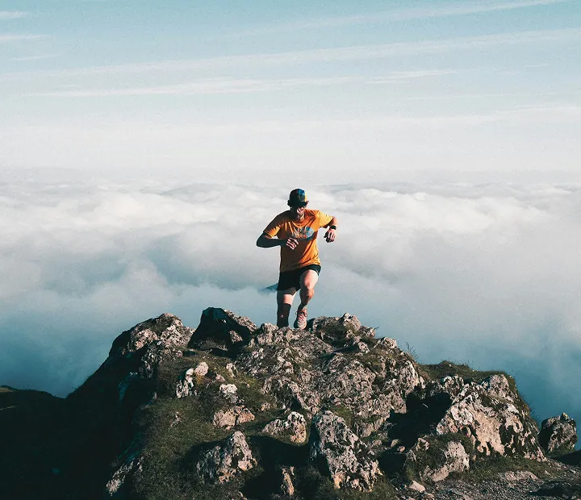
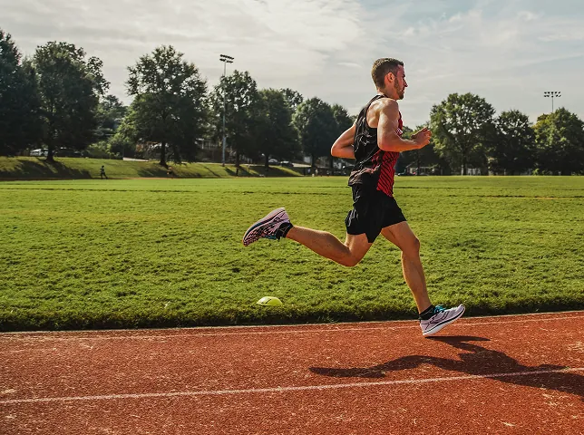
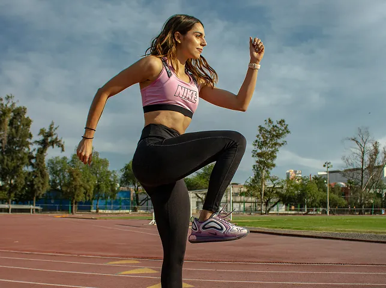

NEW
ON



PACELINE opened in 2015 with one goal — to become an all-inclusive hub for runners. Ten seasons in, we still hand-pick every shoe, every layer and every accessory in our range. From your first Couch-to-5K to your third marathon, we prepare, empower and equip you.
Hover (or tap) a runner to see what they've achieved.

Race-day kit from real-world heroes.
Shop now →
20% of profits from kits go to Girls Run Glasgow.
Shop now →